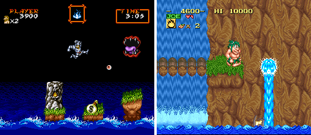
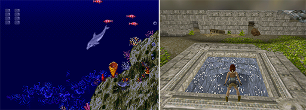
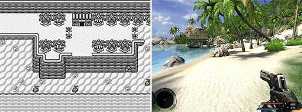
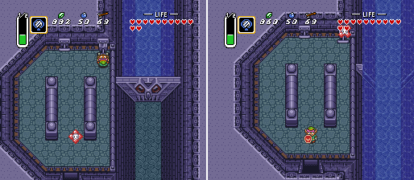
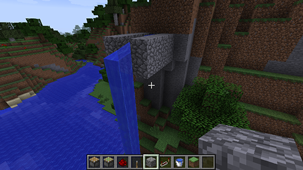
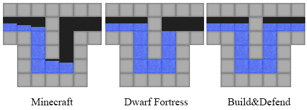
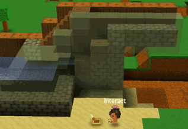
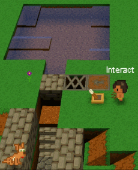
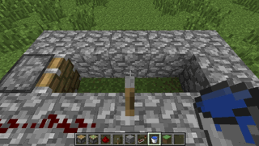
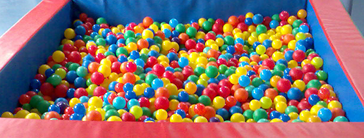

If you ever played video games, (video game) water probably is something that is deeply rooted in your brain, and You FEAR it.
Depending of your age, you first encounter with water might have been Quest for Tires, Rayman or Call of Duty, but the result is the same.
In video game, water is this strange static thing that will kill you (one way or another).
Sometime, it behaves as an invisible wall that mark the impassable border of the known universe.
Some other times, water is this strange thing that will kill you at the instant you dip a toe in it.
In the other hand, the real water is this common substance that you drink every day, that you use to take your shower, and in which you swim at the swimming pool.
If you think about it, the similarity between the water in video game, and the real water is very thin.
If you are like me, you probably never though about the similarities and the differences of video game water and real world water.
Recently, with the development of Build&Defend, I got interested in the different types and properties of waters in video games.
My goal was to find which type of water would made the best game play.
So, just for fun, I tried to organize the various types of water in a list. I hope you will enjoy it.
The water pit
In most platform video games, water and holes (in the ground) play the same role: If you fall in it, you die.
Games with this type of water include: Mario, Worms, Metal Slug, Ghouls 'N Ghosts (the infamous), Frogger, Joe & Mac, Quest for Tires.
This is the most basic and probably the most common type of water in video game.

Water in Ghouls 'N Ghosts (SNES) and Joe & Mac (Snes)
Water to explore
Slightly more recently, games made players able to explore sub-marine areas.
In those areas, the physic around the character is generally altered e.g. lower walking speed, higher jumps, ability to float.
In some games, in order to simulate respiration, the player can only stay a limited amount of time in the water.
In some games, this constraint leads to stressful puzzles and skills challenges (Earthworm Jim, Ninja Turtles on Nes).
Example of such games include Super Mario 3, Tomb Raider, Ecco the Dolphin , Aquaria, Half Life, Earthworm Jim and BioShock.
This type of water is probably the simplest type of non trivial water simulation.

Ecco the Dolphin (Mega Drive), and Tomb Raider (PC)
Border of the world water
In exploration games, designers need to set boundaries to the world.
These boundaries can be rocks, visible walls, invisible walls ... and water.
Using water as world boundary is very common in RPGs and open worlds games.
Games with this type of water include: Zelda (more of the games of the series), Black and white, Final fantasy, Farcry, Dead island, Worms (again), Fez.

Far Cry and Zelda : Link's Awakening water border.
Until now, the games we talked about all used some static water: The water does not flow nor move anywhere.
However, more recently, video games have been able (more or less accurately) to simulate the motion of water, and to create game plays around it.
It is important to note that some of the previously presented games (e.g. Zelda3, Tomb Raider, Half Life) allow for the water to move.
However, in these games, the number of configuration for the water is very limited: For example, in Zelda 3 (in the Swamp Palace), water valves can either be open or closed.
Consequently, some parts of the world are either submerged or not.
We call this type of water the "Scripted water".

Zelda 3 : The Swamp Palace valve system
For the most simplistic type of water motion simulation, Minecraft is the first game that come into my mind. In a few words, I will try to explain how the water works in Minecraft.
In am not from the Minecraft dev. team so everything I wrote just speculation based on observations.
In Minecraft, the world is a 3D Cartesian grid where each cell is set to one (and only one) type of material (e.g. stone, air, wood and water).
Cells of certain kind (like water) contain extra information such as the "amount of water" in the cell.
All rivers and seas and lakes are made of these "water cells".
In order to simulate water, the game keeps a list of "active" water cells. Next, and at each water simulation loop, each "active" water cell looks to its direct neighbor cells (bellow or at the same level -- so, 5 neighbors to look at) and try to transfer a bit of water in them (if it makes sense).
The rule that allow water to be transferred do not follow the laws of conservation: Depending on the cell's organization, the total amount of water can increase or decrease.
In the current version of Minecraft, the rules are set to ensure that the total amount of water cannot grow to the infinite (and so flood the entire world).
This was not the case in the earlier versions of Minecraft: Remember the Minecraft floods (YouTube video).
However, Minecraft's water has a behavior that is hard to grasp at first:
There are two types of water cells: The generative and the non-generative ones.
The generative ones cannot spread (but they can generate non-generative water cells).
The non-generative cannot "survive" alone: If they are not connected (in a specific way) to a generative water cell, they disappear.
This behavior allows to easily create static water cascads.
On the other hand, it is not possible to "transfer" water by letting it flow in a channel.

Minecraft static water cascad.
Dwarf Fortress is known to have a very nice water simulation system.
Like in Minecraft, you can have rivers and lakes. But you can also have very nice and intricate water pipe systems.
Similarly to Minecraft, the world of Dwarf Fortress is represented as a 3D Cartesian grid where each cell is set to one type of material.
The main difference between Minecraft and Dwarf Fortress's water are the rules used to transfer water between cells:
Dwarf Fortress's rules follow the laws of conservation (except for the evaporation).
Also, in Dwarf Fortress, water can be transfered by letting it flow in a channel.
Additionally, when the game look for neighbor cells in order to transfer water, Dwarf Fortress does not only look to immediate neighbors but to all (transitive) neighbors.
As a consequence, water in a flat area will spread until the area is completely covered (or until the granularity of water is reached).
I discovered recently that Dwarf Fortress's can also simulate water's pressure (an approximation).
The best experiment to illustrate the water pressure is the U-Bend test:
Imagine a U-Bend with water coming from one side and trying to escape from the other side.
Because of atmospheric pressure and the earth gravity, the level of water in the two sides of the U-bend should be the same.
The figure bellow show hows the water of Minecraft, Dwarf Fortress and Build&Defend behave in the U-Bend.

Water in a U-turn in video games.
As accurate as Dwarf Fortress water simulation is, it does not simulate the inertia of water. The inertia of water is what will make the water of a Geyser to go high up. Water inertia can be simulated with cells, but it requiere more computation power, show plenty of conservation problems, and give poor results with low resolution grids (like Minecraft or Dwarf Fortress). This is probably the reason why it is not implemented in any video games.
Now is the time for me to talk about the way I implemented the water in Build&Defend.
The water simulation of Build&Defend is actually close to the water simulation of Dwarf Fortress: The water follows the laws of conservation, approximates spread and pressure, and it does not deal with inertia.
Actually, the two differences between B&D and DF resides in the simulation of water's pressure: Build&Defend will equalize both side of the U-bend while Dwarf Fortress will make the water level on the entry side (left side on the fig.) higher that the water level on the exit side.
This is the reason why I took me so long before discovering that Dwarf Fortress actually had some water pressure simulation.
The other difference I can think of is that, for computationnal reasons, when looking for "neighbor cells", Build&Defend does not look for cells that are more than 16 steps aways.
Build & Defend : Water in a U-turn.
Build&Defend's water has a feature that I did not find in any other cell based game: The hability to push water with a piston.
The gifs bellow show some examples of that.


Water pushed by pistons in Build&Defend.
If you try to do that in Minecraft, here is what you will get (spoiler: the water disappears):

Minecraft : pistons and water.
Terraria and King Artur Gold are two examples of 2D games that rely on a 2D Cartesian grids to simulate water. Note that neither of them simulate water pressure not inertia.
In both Minecraft and Dwarf Fortress, the water is simulated with a cell automata (this is the name used to describe this kind of cell/rule system).
However, some other games have used other types of water simulation.
"Go to hell" is a small 2D flash game (very fun to play) where the water is simulated with particles (Smooth Particle Hydrodynamics to be exact).
In this game, the water is represented by a large set of particles that behave like little balls. If you already been a Ball Poll, you know what I mean.
This type of simulation is generaly more realistic that the cell approaches of Minecraft and Dwarf Fortress, but it also require a more powerful computer:
With today personnal computers, it is not possible to simulate 3D games with the Ball Poll technique. On the other hand, it works very well for 2D games.
"Liquid war" and "Vessel" are two examples of 2D games where the game play relies strongly on the particles fluid simulation.

A Ball poll.
At some point, computers will turn powerful enough to simulate 3D worlds with the Ball Poll technique (or a mix between Cell and Ball Poll). We just have to wait.
We cannot talk about water in video game without talking about other domains that use water simulation.
Nowadays, physicists and computer scientists know how to simulate water (and other fluids) quit realistically.
The simulations are wildly used to test products that interact with fluids (e.g. planes, rockets and cars).
Fluid simulation is also been extensively used in movies (e.g. Avatar, Transformers and Pirates of Caribbean).
And, with the democratization of GPU, small amount of water can be "realistically" simulated in real times on personal computers.
I am very impatient to see video game designers using these technologies to create new innovating game play.
Water simulation in Battleship, 2012
References (non trivial links to find)
Dwarf Fortress : Water
http://dwarffortresswiki.org/index.php/DF2012:Water
http://dwarffortresswiki.org/index.php/DF2012:Pressure
Minecraft : Water
http://minecraft.gamepedia.com/Water
Minecraft: Water flood
http://www.youtube.com/watch?v=H67Vn445IQs
Go to hell
http://www.addictinggames.com/funny-games/go-to-hell-game.jsp
Liquid War
http://www.gnu.org/software/liquidwar6


{kind=link}
{kind=link}
{kind=link}
{kind=link}
{kind=link}
{kind=link}
{kind=link}
{kind=link}